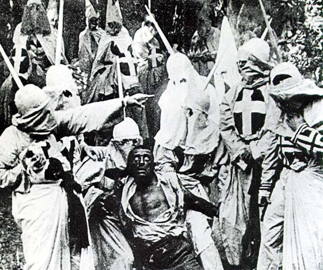

Americans have strong positive feelings about the country’s flag. Government leaders and candidates giving speeches often are flanked by the Stars and Stripes; flags appear in ceremonies honoring police officers, firefighters, and military personnel; and American embassies, military bases, and ships abroad are depicted with flags flying. The flag is displayed prominently in television, print, and online advertisements for many different products; car showrooms are draped with flags; clothing manufacturers present models wearing the latest fashions against American flag backdrops; and flags appear in ads for food, furniture, toys, and electronic gadgets.
Immediately following the 9/11 terrorist attacks, there was a huge increase in the sale and display of the American flag. Nowhere was the trend more apparent than on television news broadcasts: news anchors wore American-flag lapel pins, and background visuals featured themes such as “America Fights Back,” wrapped in the flag’s color scheme of red, white, and blue.
People are the most politically impressionable during the period from their midteens through their midtwenties, when their views are not set and they are open to new experiences. College allows students to encounter people with diverse views and provides opportunities for political engagement.Richard G. Niemi and Mary A. Hepburn, “The Rebirth of Political Socialization,” Perspectives on Political Science, 24 (1995): 7–16. Young people may join a cause because it hits close to home. After the media publicized the case of a student who committed suicide after his roommate allegedly posted highly personal videos of him on the Internet, students around the country became involved in antibullying initiatives.Virginia Sapiro, The Political Integration of Women (Urbana: University of Illinois Press, 1983).
Significant events in adults’ lives can radically alter their political perspectives, especially as they take on new roles, such as worker, spouse, parent, homeowner, and retiree.Janie S. Steckenrider and Neal E. Cutler, “Aging and Adult Political Socialization,” in Political Learning in Adulthood, ed. Roberta S. Sigel (Chicago: University of Chicago Press, 1988), 56–88. This type of transition is illustrated by 1960s student protestors against the Vietnam War. Protestors held views different from their peers; they were less trusting of government officials but more efficacious in that they believed they could change the political system. However, the political views of some of the most strident activists changed after they entered the job market and started families. Some became government officials, lawyers, and business executives—the very types of people they had opposed when they were younger.Paul Lyons, Class of ‘66 (Philadelphia: Temple University Press, 1994).
Figure 6.8

Student activists in the 1960s protested against US involvement in the Vietnam War. Some activists developed more favorable attitudes toward government as they matured, had families, and became homeowners.
Source: Photo courtesy of UW Digital Collectionshttp://commons.wikimedia.org/wiki/File:Student_Vietnam_War_protesters.JPG.
Even people who have been politically inactive their entire lives can become motivated to participate as senior citizens. They may find themselves in need of health care and other benefits, and they have more time for involvement. Organizations such as the Gray Panthers provide a pathway for senior citizens to get involved in politics.Anne Daugherty Miles, “A Multidimensional Approach to Distinguishing between the Most and Least Politically Engaged Senior Citizens, Using Socialization and Participation Variables” (PhD diss., Georgetown University, 1997).
People develop their political values, beliefs, and orientations through interactions with agents of socialization. Agents include parents, teachers, friends, coworkers, military colleagues, church associates, club members, sports-team competitors, and media.Richard E. Dawson and Kenneth Prewitt, Political Socialization (Boston: Little, Brown, 1969). The political socialization process in the United States is mostly haphazard, informal, and random. There is no standard set of practices for parents or teachers to follow when passing on the rites of politics to future generations. Instead, vague ideals—such as the textbook concept of the “model citizen,” who keeps politically informed, votes, and obeys the law—serve as unofficial guides for socializing agencies.Kenneth P. Langton, Political Socialization (New York: Oxford, 1969); Michael P. Riccards, The Making of American Citizenry (New York: Chandler Press, 1973).
Agents can convey knowledge and understanding of the political world and explain how it works. They can influence people’s attitudes about political actors and institutions. They also can show people how to get involved in politics and community work. No single agent is responsible for an individual’s entire political learning experience. That experience is the culmination of interactions with a variety of agents. Parents and teachers may work together to encourage students to take part in service learning projects. Agents also may come into conflict and provide vastly different messages.
We focus here on four agents that are important to the socialization process—the family, the school, the peer group, and the media. There are reasons why each of these agents is considered influential for political socialization; there are also factors that limit their effectiveness.
Over forty years ago, pioneering political-socialization researcher Herbert Hyman proclaimed that “foremost among agencies of socialization into politics is the family.”Herbert Hyman, Political Socialization (Glencoe, IL: Free Press, 1959), 69. Hyman had good reason for making this assumption. The family has the primary responsibility for nurturing individuals and meeting basic needs, such as food and shelter, during their formative years. A hierarchical power structure exists within many families that stresses parental authority and obedience to the rules that parents establish. The strong emotional relationships that exist between family members may compel children to adopt behaviors and attitudes that will please their parents or, conversely, to rebel against them.
Parents can teach their children about government institutions, political leaders, and current issues, but this rarely happens. They can influence the development of political values and ideas, such as respect for political symbols or belief in a particular cause. The family as an agent of political socialization is most successful in passing on basic political identities, especially an affiliation with the Republican or Democratic Parties and liberal or conservative ideological leanings.Jack Dennis and Diana Owen, “The Partisanship Puzzle: Identification and Attitudes of Generation X,” in After the Boom, ed. Stephen C. Craig and Stephen Earl Bennet (Lanham, MD: Rowman & Littlefield, 1997), 43–62.
Children can learn by example when parents act as role models. Young people who observe their parents reading the newspaper and following political news on television may adopt the habit of keeping informed. Adolescents who accompany parents when they attend public meetings, circulate petitions, or engage in other political activities stand a better chance of becoming politically engaged adults.Richard M. Merelman, Making Something of Ourselves (Berkeley: University of California Press, 1986). Children can sometimes socialize their parents to become active in politics; participants in the Kids Voting USA program have encouraged their parents to discuss campaign issues and take them to the polls on Election Day.
The home environment can either support or discourage young people’s involvement in political affairs. Children whose parents discuss politics frequently and encourage the expression of strong opinions, even if it means challenging others, are likely to become politically active adults. Young people raised in this type of family will often initiate political discussion and encourage parents to become involved. Alternatively, young people from homes where political conversations are rare, and airing controversial viewpoints is discouraged, tend to abstain from politics as adults.M. N. Saphir and Steven H. Chaffee, “Adolescents’ Contribution to Family Communication Patterns,” Human Communication Research 28, no. 1 (2002): 86–108. Politics was a central focus of family life for the Kennedys, a family that has produced generations of activists, including President John F. Kennedy and Senator Ted Kennedy.
Figure 6.9

Members of the Kennedy family have been prominently involved in politics for over a century, illustrating how the desire to participate in politics is passed on generationally.
There are limitations on the effectiveness of the family as an agent of political learning and socialization. Most families are not like the Kennedys. For many families, politics is not a priority, as they are more concerned with issues related to day-to-day life. Few parents serve as political role models for their children. Many activities, such as voting or attending town meetings, take place outside of the home.Richard M. Merelman, “The Family and Political Socialization: Toward a Theory of Exchange,” Journal of Politics, 42:461–86.
Some scholars consider the school, rather than the family, to be the most influential agent of political socialization.Robert Hess and Judith Torney, The Development of Political Attitudes in Children (Chicago: Aldine, 1967). Schools can stimulate political learning through formal classroom instruction via civics and history classes, the enactment of ceremonies and rituals such as the flag salute, and extracurricular activities such as student government. Respect for authorities is emphasized, as teachers have the ability to reward and punish students through grades.
The most important task of schools as agents of political socialization is the passing on of knowledge about the fundamentals of American government, such as constitutional principles and their implications for citizens’ engagement in politics. Students who master these fundamentals feel competent to participate politically. They are likely to develop the habit of following politics in the media and to become active in community affairs.Norman H. Nie, Jane Junn, and Kenneth Stehlik-Barry, Education and Democratic Citizenship in America (Chicago: University of Chicago Press, 1996).
The college classroom can be an environment for socializing young people to politics. Faculty and student exchanges can form, reinforce, or change evaluations of politics and government. A famous study of women students who attended Bennington CollegeLongitudinal study of women who attended Bennington College during the Great Depression of the 1930s and were politically socialized by their teachers and student colleagues. during the Great Depression of the 1930s illustrates how the college experience can create long-lasting political attitudes. The Bennington women came predominantly from wealthy families with conservative values. The faculty consisted of political progressives who supported the New Deal and other social programs. About one-third of the Bennington women adopted the progressive ideals of their teachers. Many of these women remained active in politics their entire lives. A number became leaders of the women’s rights movement.Duane F. Alwin, Ronald L. Cohen, and Theodore M. Newcomb, Political Attitudes Over the Life Span (Madison: University of Wisconsin Press, 1991).
Figure 6.10

Women at Bennington College in the 1930s became active in community affairs as a result of their political socialization in college.
Source: Courtesy of Bennington College. Left photo by C.G. Scofield. Right photo by Rotzel.
While schools have great potential as agents of political socialization, they are not always successful in teaching even basic facts about government to students. Schools devote far less time to civics and history than to other subjects that are considered to be basic skills, such as reading and math. The average amount of classroom time spent on civics-related topics is less than forty-five minutes per week nationwide, although this figure varies widely based on the school. Students whose exposure to civics is exclusively through lectures and readings generally memorize facts about government for tests but do not remember them or make connections to real-world politics. The most effective civic education programs engage students in activities that prepare them for the real world of politics, such as mock elections and legislative hearings.Richard G. Niemi and Jane Junn, Civic Education (New Haven, CT: Yale University Press, 1998).
Peers (a group of people who are linked by common interests, equal social position, and similar age) can be influential in the political socialization process. Young people desire approval and are likely to adopt the attitudes, viewpoints, and behavior patterns of groups to which they belong. Unlike the family and school, which are structured hierarchically with adults exercising authority, the peer group provides a forum for youth to interact with people who are at similar levels of maturity. Peers provide role models for people who are trying to fit in or become popular in a social setting.Lawrence J. Walker, Karl H. Hennig, and Tobias Krettenauer, “Parent and Peer Contexts for Children’s Moral Reasoning Development,” Child Development 71, no. 4 (August 2000): 1033–48.
Peer-group influence begins when children reach school age and spend less time at home. Middle-childhood (elementary school) friendships are largely segregated by sex and age, as groups of boys and girls will engage in social activities such as eating together in the lunchroom or going to the mall. Such interactions reinforce sex-role distinctions, including those with political relevance, such as the perception that males are more suited to hold positions of authority. Peer relationships change later in childhood, adolescence, and young adulthood, when groups are more often based on athletic, social, academic, and job-related interests and abilities.Judith Rich Harris, “Where Is the Child’s Environment? A Group Socialization Theory of Development,” Psychological Review 102, no. 3 (1995): 458–89.
The pressure to conform to group norms can have a powerful impact on young people’s political development if group members are engaged in activities directly related to politics, such as student government or working on a candidate’s campaign. Young people even will change their political viewpoints to conform to those held by the most vocal members of their peer group rather than face being ostracized. Still, individuals often gravitate toward groups that hold beliefs and values similar to their own in order to minimize conflict and reinforce their personal views.Eric L. Dey, “Undergraduate Political Attitudes,” Journal of Higher Education, 68 (1997): 398–413. As in the case of families, the influence of peer groups is mitigated by the fact that politics is not a high priority for most of them.
As early as the 1930s, political scientist Charles Merriam observed that radio and film had tremendous power to educate: “Millions of persons are reached daily through these agencies, and are profoundly influenced by the material and interpretations presented in impressive form, incessantly, and in moments when they are open to suggestion.”Charles Edward Merriam, The Making of Citizens (Chicago: University of Chicago Press, 1931), 160–61. The capacity of mass media to socialize people to politics has grown massively as the number of media outlets has increased and as new technologies allow for more interactive media experiences. Most people’s political experiences occur vicariously through the media because they do not have personal access to government or politicians.
Since the advent of television, mass media have become prominent socialization agents. Young people’s exposure to mass media has increased markedly since the 1960s. Studies indicate that the typical American aged two to eighteen spends almost forty hours a week consuming mass media, which is roughly the equivalent of holding a full-time job. In one-third of homes, the television is on all day. Young people’s mass-media experiences often occur in isolation. They spend much of their time watching television, using a computer or cell phone, playing video games, or listening to music alone. Personal contact with family members, teachers, and friends has declined. More than 60 percent of people under the age of twenty have televisions in their bedrooms, which are multimedia sanctuaries.Kaiser Family Foundation, The Media Family (Menlo Park, CA: Kaiser Family Foundation, 2006).
The use of more personalized forms of media, such as text messaging and participation in social networking sites, has expanded exponentially in recent years. Young people using these forms of media have greater control over their own political socialization: they can choose to follow politics through a Facebook group that consists largely of close friends and associates with similar viewpoints, or they may decide to avoid political material altogether. Young people, even those who have not reached voting age, can become involved in election campaigns by using social media to contribute their own commentary and videos online.
Media are rich sources of information about government, politics, and current affairs. People learn about politics through news presented on television, in newspapers and magazines, on radio programs, on Internet websites, and through social media. The press provides insights into the workings of government by showcasing political leaders in action, such as gavel-to-gavel coverage of Congress on C-SPAN. People can witness politicians in action, including on the campaign trail, through videos posted on YouTube and on online news sites such as CNN and MSNBC. Entertainment media, including television comedies and dramas, music, film, and video games also contain much political content. Television programs such as The West Wing and Law and Order offer viewers accounts of how government functions that, although fictionalized, can appear realistic. Media also establish linkages between leaders, institutions, and citizens. In contrast to typing and mailing a letter, it is easier than ever for people to contact leaders directly using e-mail and Facebook.
Some factors work against the media as agents of political socialization. Media are first and foremost profit-driven entities that are not mandated to be civic educators; they balance their public service imperative against the desire to make money. Moreover, unlike teachers, journalists do not have formal training in how to educate citizens about government and politics; as a result, the news often can be more sensational than informative.
Political learning and socialization experiences can differ vastly for people depending on the groups with which they associate, such as those based on gender and racial and ethnic background. Certain groups are socialized to a more active role in politics, while others are marginalized. Wealthier people may have more resources for participating in politics, such as money and connections, than poorer people.
Figure 6.11
Secretary of State Hillary Clinton is one of an increasing number of women who has achieved a highly visible political leadership role.
There are significant differences in the way that males and females are socialized to politics. Historically, men have occupied a more central position in American political culture than women. This tradition was institutionalized at the time of the founding, when women did not receive the right to vote in the Constitution. While strides have been made over the past century to achieve political equality between the sexes, differences in sex-role socialization still exist. Traits associated with political leadership, such as being powerful and showing authority, are more often associated with males than females. Girls have fewer opportunities to observe women taking political action, especially as few females hold the highly visible positions, such as member of Congress and cabinet secretary, that are covered by mass media. This is starting to change as women such as Madeleine Albright and now Hillary Clinton attract media attention in their roles as secretary of state or as Nancy Pelosi did as Speaker of the House of Representatives. Sarah Palin gained national attention as Republican John McCain’s vice presidential running mate in 2008, and she has become a visible and outspoken political figure in her own right. Despite these developments, women are still are socialized to supporting political roles, such as volunteering in political campaigns, rather than leading roles, such as holding higher-level elected office. The result is that fewer women than men seek careers in public office beyond the local level.Virginia Sapiro, Women in American Society (New York: Mayfair Publishing, 2002).
A political generationGroup of individuals similar in age who share a general set of socialization experiences that leads to the development of shared political orientations that distinguish them from other age cohorts. is a group of individuals, similar in age, who share a general set of political socialization experiences leading to the development of shared political orientations that distinguish them from other age groups in society. People of a similar age tend to be exposed to shared historical, social, and political stimuli. A shared generational outlook develops when an age group experiences a decisive political event in its impressionable yearsPeriod from late adolescence to early adulthood when people begin to think more seriously about politics and can take part in meaningful ways, such as by voting.—the period from late adolescence to early adulthood when people approach or attain voting age—and begins to think more seriously about politics. At the same time, younger people have less clearly defined political beliefs, which makes them more likely to be influenced by key societal events.Michael X. Delli Carpini, Stability and Change in American Politics (New York: New York University Press, 1986).
The idea of American political generations dates back to the founding fathers. Thomas Jefferson believed that new generations would emerge in response to changing social and political conditions and that this would, in turn, influence public policy. Today people can be described as being part of the Depression Era/GI generation, the silent generation, the baby boom generation, generation X, and the millennial generation/generation Y. Depression Era/GIs, born between 1900 and 1924, were heavily influenced by World War I and the Great Depression. They tend to trust government to solve programs because they perceived that Franklin Delano Roosevelt’s New Deal programs helped the country recover from the Depression. The silent generation, born between 1922 and 1945, experienced World War II and the 1950s during their impressionable years. Like their predecessors, they believe that government can get things done, but they are less trusting of leaders. The Vietnam War and the civil rights and women’s rights movements left lasting impressions on the baby boomers, who were born between 1943 and 1960. The largest of the generations, this cohort protested against the government establishment in its youth and still distrusts government. Generation Xers, born between 1965 and 1980, came of age during a period without a major war or economic hardship. The seminal events they relate to are the explosion of the Challenger spacecraft and the Iran-Contra hearings. This generation developed a reputation for lacking both knowledge and interest in politics.William Strauss and Neil Howe, Generations (New York: William Morrow, 1992). The political development of the millennials, those born between 1981 and 2000, is influenced by the terrorist attacks of 9/11 and its aftermath, as well as by the rise of digital technologies. This generation is more multicultural and has more tolerance for racial and ethnic difference than older cohorts. Sociologists William Strauss and Neil Howe have identified an emerging cohort born after 2000, which they label the homeland generation. This generation is influenced by omnipresent technology, the war on terror, and parents who seek to protect them from societal ills.William Strauss and Neil Howe, Millennials Rising (New York: Random House, 2000).
Conflicts between generations have existed for centuries. Thomas Jefferson observed significant differences in the political worldviews of younger and older people in the early days of the republic. Younger government leaders were more willing to adapt to changing conditions and to experiment with new ideas than older officials.Daniel J. Elazar, The Generational Rhythm of American Politics (Philadelphia: Temple University, Center for the Study of Federalism, 1976). Today generation Xers and the millennials have been portrayed as self-interested and lacking social responsibility by their elders from the baby boom generation. Generational conflicts of different periods have been depicted in landmark films including the 1950s-era Rebel without a Cause and the 1960s-era Easy Rider. Generation X has been portrayed in films such as Slacker, The Breakfast Club, and Reality Bites. Movies about the millennial generation include Easy A and The Social Network.
Political socialization is the process by which people learn about their government and acquire the beliefs, attitudes, values, and behaviors associated with good citizenship. The political socialization process in the United States stresses the teaching of democratic and capitalist values. Agents, including parents, teachers, friends, coworkers, church associates, club members, sports teams, mass media, and popular culture, pass on political orientations.
Political socialization differs over the life course. Young children develop a basic sense of identification with a country. College students can form opinions based on their experiences working for a cause. Older people can become active because they see a need to influence public policy that will affect their lives. There are subgroup differences in political socialization. Certain groups, such citizens with higher levels of education and income, are socialized to take an active part in politics, while others are marginalized.
Political generations consist of individuals similar in age who develop a unique worldview as a result of living through particular political experiences. These key events include war and economic depression.
After reading this section, you should be able to answer the following questions:
New media are becoming important agents of political socialization because they host a great deal of political content and require the active engagement of users. Both news media and entertainment media provide depictions that influence political socialization, such as models of government leaders and citizen action.
People’s interactions with media are increasingly important to the process of political socialization. The explosion in communication technologies has resulted in people communicating less via face-to-face interactions with family members and peers and more through technological intermediaries, such as the Internet, cell phones, and personal digital devices. Even teachers find it increasingly difficult to compete with the communications technologies that command their students’ attention.
The Internet is a potentially powerful agent of political socialization because of the vast amount of political information available online and the fact that people actively engage with online platforms. Not only do people get information about government from news sites and blogs, they can post responses to stories and debate others through discussion forums. They also can use online media to actively take part in political processes, such as election campaigns.
Young people, in particular, use the Internet to learn about and participate in politics, although older people are going online for politics at an increasing rate. Evidence suggests that young people are developing their political identities online as they learn about the differences between candidates and political parties and acquire information about issues and political events. They use social media to create collaborative online communities that organize for political causes, lobby government, and campaign for candidates. All of these activities contribute to the socialization of engaged citizens.
Depictions of socialization and learning experiences abound in media. News and entertainment media are especially powerful as they provide depictions that embody the beliefs and values that make up American political culture. Core American values are crucial elements of a “good story,” as they resonate with the public. Both egalitarianism and individualism are celebrated in stories in which lone, ordinary people are able to defeat powerful economic and political forces aligned against them.
News media provide frequent depictions of political role models, including government leaders and citizens who are actively involved in community affairs. Politicians are often portrayed negatively, which can cause people to distrust leaders and lose faith in government. A prominent media frame portrays political leaders as constantly at odds and unable to reach civil agreement or compromise. This media frame is reinforced during elections when candidates attack their opponents unrelentingly in their stump speeches and ads.
Entertainment media provide depictions of core American values central to the political socialization process. Individualism is portrayed frequently in television dramas and comedies that tell stories of average citizens taking on the political and economic systems. Politicians can use entertainment media to convey an image of themselves embodying American values. Former Alaska governor Sarah Palin has cultivated an image of rugged individualism and self-reliance. She reinforced this image through the reality television program Sarah Palin’s Alaska.
Depictions can take the form of fictional dramas, such as Friday Night Lights’ portrayal of family life and the politics of sports in rural Texas, and sitcoms, or the offbeat view of parent-child relationships shown in Modern Family. Reality television programs such as Kate Plus 8 and Keeping Up with the Kardashians offer insights into family socialization that can invite commentary and criticism from viewers.
Children’s literature and movies feature many stoic, individualist characters. The classic film The Wizard of Oz (1939) has been called a tale of self-reliance. Dorothy, dropped from Kansas into Oz by a tornado, is advised that, to be able to return home, she should go to the Emerald City and appeal to the superior power, the Wizard of Oz. On the way there, she meets up with a Scarecrow desiring a brain, a Tin Man in search of a heart, and a Cowardly Lion in need of courage. The four meet a fearsome Wizard who orders them to bring back the broom of the Wicked Witch of the West. After a series of adventures, they return victorious to the Emerald City, only to find that the Wizard is nothing but a small man behind a curtain who has created an illusion of the “great and powerful Oz.” It turns out, he explains, that he was merely a lost itinerant balloonist who, upon descending from the clouds, was declared a Wizard by the credulous people. Dorothy and her friends learn that they each had the power they sought all along.
Teachers seeking to instill democratic and character values in their students have capitalized on the popularity of Harry Potter, the protagonist wizard in J. K. Rowling’s popular books. Harry has become a hero to children (and adults) who have read about his exploits. He embodies values of individualism and bravery tempered with humility. Young people can relate to Harry because in the world of the Muggles (those without magical powers), he is average and imperfect. Even among the wizards, he is not the smartest or the most talented. Yet he is able to handle extraordinary situations with bravery and skill. Harry’s heroism provides a civics lesson for readers because it illustrates the balance between the democratic values of individualism and egalitarianism. While Harry realizes that his magic powers give him the ability to distinguish himself, he chooses to include others—Hermione Granger, Ron and Ginny Weasley, and Neville Longbottom—as he fights against evil. Further, Harry does not seek public recognition for his acts of heroism.Jeffrey A. Becker, “Heroism and the Political Morality of Democracy in Harry Potter,” paper delivered at the Annual Meeting of the American Political Science Association, Boston, MA, August 29–September 1, 2002.
MTV’s series The Real World, which first aired in 1991, provides an intriguing look at the socialization experiences of groups of twentysomething strangers who live together for a year. The program provides insights into the effects of peers on the development of the housemates’ attitudes and behaviors. In the course of learning to adapt to new surroundings, live as a group, and find jobs, cast members deal with political issues. The San Francisco season attracted national media attention because it featured the house members grappling with the issue of HIV/AIDS when roommate Pedro, who worked as an AIDS educator and counselor, tested positive for the disease. Depictions related to subgroup relations and multiculturalism abound on The Real World. Cast members come from a variety of racial and ethnic backgrounds, which is a source of tension in the house. Almost every season involves a black male who stereotypically is alienated and confrontational. Most of the time, this character is shown talking about the societal injustices he suffers and picking fights with other house members. These confrontations force cast members to take sides and voice their opinions about race.
Parents and educators express concerns that socialization of young people via mass media contributes to a citizenry that is alienated from politics and distrusts government. Many of the media messages young people receive about politics are negative. They spend little time discussing these messages with other people or discovering the ways in which they can actively engage the political world. Alternatively, young people today are exposed to much more political media content than any prior generation. This exposure can contribute to greater awareness of government and opportunities for civic action. Digital communication technologies offer people increased opportunities for taking part in politics via media, such as posting to a blog or participating in a “tweetupAn online or offline meeting organized via the microblogging platform Twitter.,” using the microblogging platform Twitter to inform people about a political event taking place online or offline.
The influence of mass media on children’s attitudes toward leaders and government has become more negative over time, as media messages focus more on personal scandals and institutional dysfunction. For the most part, young children’s initial views of politics tend to be positive. Studies conducted in the 1960s showed that children idealized the president. They considered him a benevolent leaderA concept in which young children consider the president to be a personal friend who will do good things for the nation., someone who did good things for the country and would help a child personally. Even during the Watergate scandal of the 1970s, which involved a break-in at the Democratic National Committee headquarters and a cover-up by President Richard Nixon, children held strong, positive feelings about the office of the president. Children learned about President Nixon’s impeachment primarily from their parents and teachers, and not from the mass media. Media accounts focused on the political aspects of the Nixon impeachment, which went over the heads of most children. Many parents felt it was important to instill positive views of government in their children during this period of political upheaval.
The situation was much different in the 1990s when children learned about President Bill Clinton’s involvement with White House intern Monica Lewinsky, predominantly from nonstop, graphic television coverage that focused on Clinton’s personal life. Young children became disillusioned with President Clinton because they felt he had not told the truth. For the first time, children’s views of the sitting president, as well as their opinions about the institution of the presidency, were significantly more negative than those of their parents. Fewer children aspired to become president when they grew up.Diana Owen and Jack Dennis, “Kids and the Presidency: Assessing Clinton’s Legacy,” The Public Perspective 10, no. 3 (April–May 1999): 41–44.
The Payne Fund studiesResearch conducted between 1929 and 1933 that demonstrated the influence of movies on young people’s attitudes about racial groups, war, and crime. of motion pictures and youth, conducted between 1929 and 1933, provide early evidence that film can be a powerful agent of socialization. The studies found that people developed attitudes toward racial and ethnic groups, war, and crime based on their exposure to popular films. Audience members who saw the controversial film Birth of a Nation believed that blacks in the post–Civil War era were uncivilized and dangerous. Children who watched their favorite movie stars, such as James Cagney and Humphrey Bogart, playing criminals on screen imitated their behavior patterns by acting up in school.Garth Jowett, Ian C. Jarvic, and Kathy H. Fuller, Children and the Movies (New York: Cambridge, 1996).
Figure 6.12
Early research indicated that film could be an influential agent of political socialization. Negative attitudes toward African Americans were transmitted to audiences through the film Birth of a Nation.
Recognizing that film has the power to impart political messages to the public, officials in Washington have forged connections with the filmmaking community in Hollywood. The Hollywood-Washington connection dates back to the 1930s when President Herbert Hoover befriended MGM mogul Louis B. Mayer, whose studio produced many of the most popular films of the era. President Franklin D. Roosevelt realized that films could influence public perceptions of the Great Depression and the United States’ involvement in World War II. Roosevelt encouraged filmmakers to make movies with optimistic messages that would generate support for government action. The defeatist ending of director John Ford’s Oscar-winning film The Grapes of Wrath (1940), based on the John Steinbeck novel, was changed to depict the Joad family persevering despite terrible hardship, due to their inner strength. In addition to prowar documentaries such as Frank Capra’s Why We Fight series, Roosevelt requested that studio heads make popular films in support of the war effort. Films such as Confessions of a Nazi Spy depicted Germany as a nation out to destroy the American Constitution and the Bill of Rights. Anti-German messages were delivered in popular series films such as Tarzan Triumphs (1943), in which Tarzan and Cheetah fight Nazis who parachute into their jungle paradise.Clayton R. Koppes and Gregory D. Black, Hollywood Goes to War (New York: Free Press, 1987).
Immediately following the 9/11 terrorist attacks, representatives of Hollywood’s major studios, television networks, trade organizations, and the creative community met with senior White House officials to discuss how the entertainment community could help in the war against terror by emphasizing that the 9/11 attacks were an affront to civilization.“Hollywood Considers Role in War Effort,” CNN, November 12, 2001, http://www.cnn.com. Hollywood sought to define its political role while at the same time protecting its future at the box office. The first inclination was to feature comedy and fantasy fare that would be uplifting and noncontroversial. Films featuring terrorist themes—such as the Jennifer Lopez vehicle Tick Tock, which is about terrorists planting bombs in Los Angeles shopping malls, and Nose Bleed, a Jackie Chan movie about a window washer who discovers a plan to blow up the World Trade Center—were shelved. Images of the Twin Towers were removed from films set for release, such as Spiderman. However, video rentals of films featuring dramatic action and terrorist plots increased by 30 percent in the months directly following the attacks, which gave Hollywood an indication that the public would be receptive to more violent offerings.“Commercial Response to September 11,” NewsHour Online, October 24, 2001, http://www.pbs.org/newshour. War films with a patriotic theme, such as Behind Enemy Lines and The Last Castle, proved to be highly popular, and coincidentally, reinforced the messages suggested by the White House delegation.
Mass media have become compelling agencies of political learning, as young people spend a tremendous amount of time being exposed to television, the Internet, video games, and other media rather than interacting with other people. Media messages about politics are often negative, which may lead young people to become alienated from the political process. Young people, in particular, may learn a good deal about politics from entertainment and popular media.
Young people often have difficulty seeing the relevance of civic education to their immediate lives. Programs tend to emphasize future participation such as voting in presidential elections, which is an activity that students cannot engage in until they reach the age of eighteen. However, innovative curriculum projects can stimulate students’ interest in elections through meaningful campaign-related activities.
Kids Voting USA is a program initiated in 1988 that allows grade school teachers to use a curriculum designed around an election campaign. Students become involved by researching issues and preparing position papers, constructing informational websites, writing articles for newspapers, and serving as reporters on local television stations. On Election Day, children accompany parents to the polls and cast ballots in a special election. Children who participate are often motivated to turn out at elections when they reach voting age. In addition, children’s participation in Kids Voting USA stimulates parents’ interest in the campaign and voter turnout. Young people initiate discussions at home that are associated with their school projects. This enthusiasm for elections continues for some families after the program’s completion, especially among families of lower socioeconomic status who previously had little incentive for participating in politics.Michael McDevitt and Steven H. Chaffee, “Second-Chance Political Socialization: ‘Trickle-Up’ Effects of Children on Parents,” in Engaging the Public, ed. Thomas J. Johnson, Carol E. Hays, and Scott P. Hays (Lanham, MD: Rowman & Littlefield, 1998), 57–66.
Calavita, Marco. Apprehending Politics. Albany: State University of New York Press, 2005. Looks at how the news media influences the political beliefs and behavior of generation X.
Campbell, David E. Why We Vote. Princeton, NJ: Princeton University Press, 2006. Examines the ways in which schools and communities socialize young people to politics.
Craig, Steven C., and Stephen Earl Bennet, eds. After the Boom. Lanham, MD: Rowman & Littlefield, 1997. Explores the socializing experiences and political orientations of generation X, people born between 1960 and 1980.
Delli Carpini, Michael X. Stability and Change in American Politics. New York: New York University Press, 1986. A study of the baby boom generation using a political socialization framework.
Elazar, Daniel J. The American Mosaic. Boulder, CO: Westview Press, 1994. Examines the geographical underpinnings of American political culture across generations.
Hunter, James Davison. Culture Wars. New York: Basic Books, 1991. Discusses how subgroups based on religious differences disagree on fundamental issues of American national identity.
Johnson, Thomas J., Carol E. Hays, and Scott P. Hays. Lanham, MD: Rowman & Littlefield, 1998. A collection of articles discussing how the mass media can contribute to the political socialization process and foster the development of democratic values and participation.
Kitwana, Bakari. The Hip-Hop Generation. New York: Basic Civitas Books, 2002. Discusses the socialization experiences of young black Americans who find their political voice in hip-hop music.
McClosky, Herbert, and John Zaller. The American Ethos. Cambridge, MA: Harvard University Press, 1984. Examines the nature of Americans’ commitment to democratic and capitalist values.
Niemi, Richard G., and Jane Junn. Civic Education. New Haven, CT: Yale University Press, 1998. Explores how schools succeed and fail in teaching civics.
Schmermund, Kathleen. Charles Gibson vs. Jon Stewart. New York: Lambert Academic Publishing, 2010. Compares political socialization of young people via traditional and fake news media.
Strauss, William, and Neil Howe. Generations. New York: William Morrow and Company, 1992. Provides an overview of American generations since the founding of America.
White, John Kenneth. The Values Divide. New York: Chatham House Publishers, 2003. An account of how changes in the demographic, racial, and ethnic makeup of the United States that have occurred since the 1950s have resulted in a fundamental shift in cultural values.
Youniss, James, and Miranda Yates. Community Service and Social Responsibility in Youth. Chicago: University of Chicago Press, 1997. A study of high school community service programs and how they work to promote future civic participation.
42: Forty Two Up (1999). The sixth and final installment of Michael Apted’s unprecedented documentary film chronicling the lives of fourteen British men and women in seven-year intervals. The subjects represent a cross-section of British society, and their life stories depict a variety of socialization experiences and political orientations. This series of documentaries, beginning with Seven Up, is the only film depiction of socialization over the life course.
American Family (2002). A PBS dramatic series that examines the everyday lives of members of an extended Latino family.
American History X (1998). An examination of two brothers who are drawn into a neo-Nazi skinhead gang. The film examines family socialization as the initial source of one brother’s racism, which is reinforced in prison and in a gang.
An American Family (1973), American Family Revisited (1983), Lance Loud!: A Death in an American Family (2003). A television documentary series capturing the life and times of the Loud family; the series was one of the first forays into “reality TV” and became controversial as the family dealt publicly with many difficult life situations, including issues of sexual orientation and divorce.
The Breakfast Club (1985). This film explores diverse socialization experiences in the home, school, and peer group of several high school students forced to do detention together in the school library.
Dead End (1937). An examination of the problems, including cultural conflicts, faced by New York City residents as they live through their impressionable years during the Great Depression.
Easy Rider (1969). This portrayal of two young societal dropouts who ride motorcycles across the American southwest depicts various scenes of the late 1960s counterculture.
Rebel without a Cause (1955). James Dean portrays a troubled and misunderstood middle-class 1950s-era youth in this classic depiction of generational conflict.
River’s Edge (1987). A dark portrayal of 1980s youth culture based on a true story of friends who do not report the murder of a woman in their group by her boyfriend. The film deals with issues, such as family socialization in homes with absentee parents and peer-group influence. It was selected as the “Film That Mattered” for the 1980s by the LA International Film Festival.
Slacker (1991). This documentary-style film of twentysomethings living on the edge of society in Austin, Texas, contributed to the image of 1990s youth culture as aimless and bored.